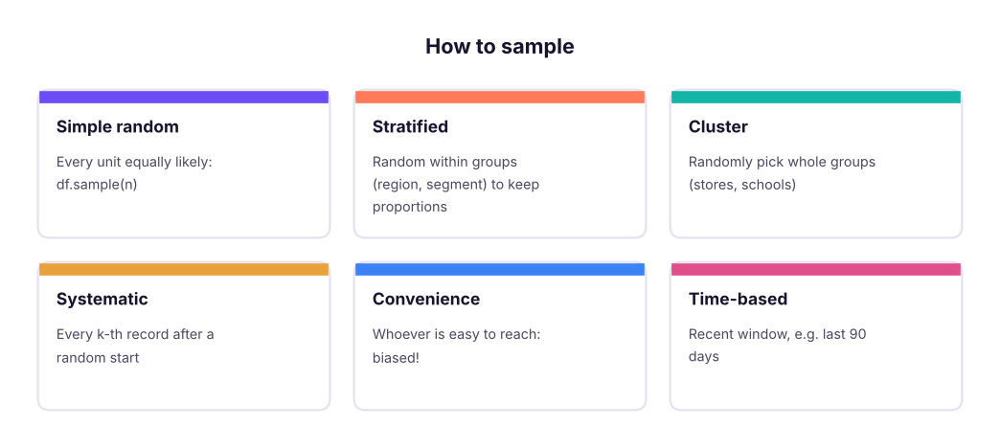
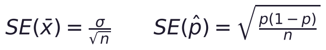
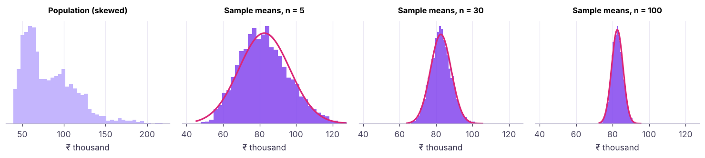
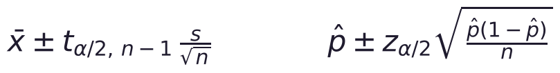
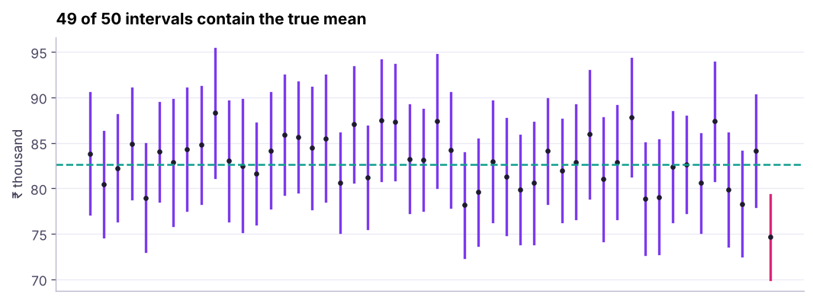
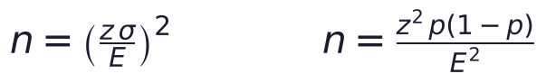

Sampling, the Central Limit Theorem and Confidence Intervals
Learn how a sample tells us about a population. Population vs sample, sampling methods and biases, sampling distributions and standard error, the Central Limit Theorem by simulation, confidence intervals for means and proportions (z, t and bootstrap), and how to choose a sample size.
- Distinguish population and sample, parameter and statistic, and name common sampling methods and biases
- Explain sampling distributions and standard error
- Demonstrate the Central Limit Theorem by simulation and state when it applies
- Compute and interpret confidence intervals for a mean and a proportion, including the bootstrap
- Estimate the sample size needed for a target margin of error
Population and sample
| Term | Population | Sample |
|---|---|---|
| What | Everyone/everything of interest | The part you observe |
| Summary | Parameter (μ, σ, p) | Statistic (x̄, s, p̂) |
| Example | All 1,500 employees | 100 surveyed employees |
We almost never see the population (all customers, all future orders), so we estimate parameters from samples and state our uncertainty.

import pandas as pd, numpy as np
from scipy import stats
hr = pd.read_csv("hr_employees.csv")
pop_mean, pop_rate = hr.monthly_income.mean(), (hr.attrition == "Yes").mean()
print(f"population: mean income {pop_mean:,.0f}, attrition {pop_rate:.1%}, N = {len(hr)}")
srs = hr.sample(150, random_state=1)
strat = hr.groupby("department", group_keys=False).sample(frac=0.1, random_state=1) # stratified 10%
print(f"simple random n=150: mean {srs.monthly_income.mean():,.0f}, attrition {(srs.attrition == 'Yes').mean():.1%}")
print(f"stratified n={len(strat)}: mean {strat.monthly_income.mean():,.0f}; department shares kept:",
(strat.department.value_counts(normalize=True) - hr.department.value_counts(normalize=True)).abs().max().round(3) < 0.01)population: mean income 82,611, attrition 25.9%, N = 1500 simple random n=150: mean 85,587, attrition 21.3% stratified n=149: mean 81,315; department shares kept: True
A huge biased sample is worse than a small random one. Watch for selection bias (only app users surveyed), non-response bias (unhappy customers ignore surveys), survivorship bias (studying only companies that still exist) and time bias (a festive week is not a normal week).
Sampling distributions and standard error
Take many samples and compute the mean of each: those means form the sampling distribution. Its standard deviation is the standard error (SE).

rng = np.random.default_rng(0)
inc = hr.monthly_income.to_numpy()
for n in (10, 40, 160, 640):
means = [rng.choice(inc, n).mean() for _ in range(3000)]
print(f"n={n:4d}: sd of sample means {np.std(means):7,.0f} | formula σ/√n {inc.std() / np.sqrt(n):7,.0f}")n= 10: sd of sample means 9,854 | formula σ/√n 9,846 n= 40: sd of sample means 4,970 | formula σ/√n 4,923 n= 160: sd of sample means 2,492 | formula σ/√n 2,461 n= 640: sd of sample means 1,232 | formula σ/√n 1,231
Quadrupling the sample size halves the standard error: precision grows with √n, so doubling precision costs four times the data.
The Central Limit Theorem
CLT: for a large enough sample (rule of thumb n ≥ 30, more for very skewed data), the sampling distribution of the mean is approximately normal, whatever the shape of the population, with mean μ and SE σ/√n.

The CLT is why z- and t-tests, confidence intervals and A/B tests work on non-normal business data such as revenue.
Confidence intervals
A 95% confidence interval is a range built by a method that captures the true parameter in 95% of repeated samples.

sample = hr.sample(100, random_state=3)
x = sample.monthly_income
se = x.std() / np.sqrt(len(x)); tcrit = stats.t.ppf(0.975, df=len(x) - 1)
lo, hi = x.mean() - tcrit * se, x.mean() + tcrit * se
print(f"mean {x.mean():,.0f} | 95% CI {lo:,.0f} to {hi:,.0f} | t* = {tcrit:.3f} | true mean {pop_mean:,.0f} inside? {lo <= pop_mean <= hi}")
print("scipy:", [round(v) for v in stats.t.interval(0.95, len(x) - 1, loc=x.mean(), scale=se)])
k = (sample.attrition == "Yes").sum(); n = len(sample); ph = k / n
z = stats.norm.ppf(0.975)
print(f"attrition p̂ = {ph:.2f}, 95% CI (Wald) {ph - z * np.sqrt(ph * (1 - ph) / n):.3f} to {ph + z * np.sqrt(ph * (1 - ph) / n):.3f}")
from statsmodels.stats.proportion import proportion_confint
print("Wilson CI (better for small n or extreme p):", [round(v, 3) for v in proportion_confint(k, n, method="wilson")])mean 82,653 | 95% CI 77,094 to 88,213 | t* = 1.984 | true mean 82,611 inside? True scipy: [77094, 88213] attrition p̂ = 0.32, 95% CI (Wald) 0.229 to 0.411 Wilson CI (better for small n or extreme p): [0.237, 0.417]

It does not mean "there is a 95% probability that the true value is in this particular interval": the true value is fixed. It means the procedure captures the true value 95% of the time. In practice, say "we are 95% confident the average income is between … and …".
| Wider interval when… | Narrower when… |
|---|---|
| Higher confidence (99% vs 95%) | Larger sample size |
| More variable data | Less variable data |
| Smaller sample | Lower confidence (90%) |
Bootstrap confidence intervals
When there is no simple formula (median, ratios, percentiles), resample the sample with replacement many times and take percentiles of the statistic.
boot = np.array([rng.choice(x.to_numpy(), len(x), replace=True) for _ in range(5000)])
med = np.median(boot, axis=1)
print(f"sample median {x.median():,.0f} | 95% bootstrap CI {np.percentile(med, 2.5):,.0f} to {np.percentile(med, 97.5):,.0f}")
res = stats.bootstrap((x.to_numpy(),), np.median, confidence_level=0.95, n_resamples=5000, random_state=0, method="percentile")
print("scipy.stats.bootstrap:", [round(v) for v in (res.confidence_interval.low, res.confidence_interval.high)])sample median 82,666 | 95% bootstrap CI 68,750 to 90,542 scipy.stats.bootstrap: [68746, 89750]
Sample size planning
Required n for a margin of error E (half-width of the CI):

def n_for_mean(sigma, E, conf=0.95): return int(np.ceil((stats.norm.ppf(1 - (1 - conf) / 2) * sigma / E) ** 2))
def n_for_prop(E, p=0.5, conf=0.95): return int(np.ceil(stats.norm.ppf(1 - (1 - conf) / 2) ** 2 * p * (1 - p) / E ** 2))
print("income within ±₹5,000:", n_for_mean(inc.std(), 5000), "employees | ±₹2,000:", n_for_mean(inc.std(), 2000))
print("survey proportion within ±5 points:", n_for_prop(0.05), "| ±3 points:", n_for_prop(0.03), "| ±1 point:", n_for_prop(0.01))income within ±₹5,000: 149 employees | ±₹2,000: 931 survey proportion within ±5 points: 385 | ±3 points: 1068 | ±1 point: 9604
This is why opinion polls survey about 1,000 people (±3 points) and why A/B tests on small effects need tens of thousands of users (lesson 6).
Summary
- Parameters describe populations; statistics estimate them from samples. Random (and stratified) sampling avoids bias; size cannot fix bias.
- The standard error σ/√n measures how much a statistic varies from sample to sample.
- The CLT makes sample means approximately normal for large n, whatever the population shape.
- CI for a mean: x̄ ± t·s/√n; for a proportion: p̂ ± z·√(p̂(1 − p̂)/n) (Wilson for small samples); bootstrap for anything else.
- Plan sample size from the margin of error: halving the error needs four times the data.
1. What happens to the standard error when the sample size quadruples?
2. What does the Central Limit Theorem say?
3. A 95% CI for mean spend is ₹820–₹910. Best interpretation?
4. Which makes a confidence interval narrower?
5. How do you get a CI for a median without a formula?
6. Which bias occurs when only active app users answer a satisfaction survey?
(1) From ab_test.csv, compute a 95% CI for the conversion rate of each group. Do they overlap? (2) Bootstrap a 95% CI for the difference in mean order value between groups. (3) How many users per group would you need to estimate a conversion rate within ±1 point?
Show solution
ab = pd.read_csv("ab_test.csv")
for g, d in ab.groupby("group"): print(g, [round(v, 4) for v in proportion_confint(d.converted.sum(), len(d), method="wilson")])
a, b = ab[ab.group == "A_control"].order_value.to_numpy(), ab[ab.group == "B_new_checkout"].order_value.to_numpy()
diffs = [rng.choice(b, len(b)).mean() - rng.choice(a, len(a)).mean() for _ in range(3000)]
print(np.percentile(diffs, [2.5, 97.5]))
print(n_for_prop(0.01, p=0.12))Q: Explain the Central Limit Theorem to a non-technical manager. If we average enough randomly chosen customers, those averages behave predictably (a bell curve) even when individual spending is wildly uneven, so we can say how confident we are in an average.
Q: What is the difference between standard deviation and standard error? Standard deviation measures spread of individual values; standard error measures spread of a statistic (like the mean) across samples: SE = sd/√n.
Q: How would you choose a sample size for a survey? Decide the margin of error and confidence level, estimate variability (use p = 0.5 for proportions if unknown), compute n, then inflate for expected non-response.
Practise more online
Free, trusted places to test yourself on this topic. Links open the original site in a new tab.